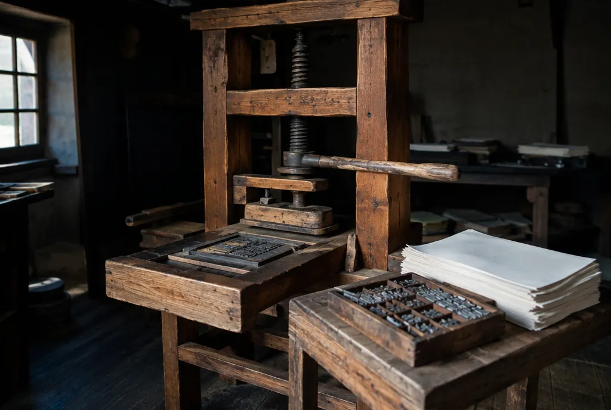

① 읽고 듣기
문장을 누르면 원어민 목소리로 읽어 줍니다. 다음 단계에서는 문장을 «골라» 칠합니다.
말 속도

문장을 누르면 원어민 목소리로 읽어 줍니다. 다음 단계에서는 문장을 «골라» 칠합니다.
이 글에서 가장 중요한 문장 2개를 위 본문에서 눌러 고르세요. 하나는 «원인», 하나는 «결론» 입니다.
먼저 위 세 칸을 보고, 빈칸에 알맞은 단어를 고르세요.
🔊 를 눌러 발음을 듣고 예문을 따라 읽은 뒤, 아래 «뜻 맞히기 게임» 을 끝까지 풀어 보세요. 뜻은 게임을 끝내면 열려요.
답을 고른 뒤, 그 답을 뒷받침하는 본문 문장도 고르세요. 답과 근거가 둘 다 맞아야 정답입니다.
예문을 틀로 삼아, 빈칸 두 곳을 «내 생각 + 그 이유» 로 바꿔 영어로 써 보세요.
“I think the printing press changed the world because ordinary people could finally own books.”
I think 내 생각 because 그렇게 생각한 이유.
①~⑥ 도장 6개를 다 모으면 포인트를 받아요 (하루 2번까지).
다음에는 어떤 내용을 더 읽고 싶나요? 재미로 하는 투표예요 (도장·포인트와는 상관없어요).
이 글는 망고아이 «영어 독서» 4단계 고1 지식 글 글입니다. 영어 독서 목록의 같은 글과 본문이 같고, 여기서는 그림책처럼 6가지 활동(읽고 듣기·핵심 문장·요점정리·낱말 게임·근거 찾기·바꿔 쓰기)으로 공부합니다.
사진은 이 글을 위해 Higgsfield AI 로 새로 만든 실사 이미지입니다(실제 촬영 사진이 아닙니다).